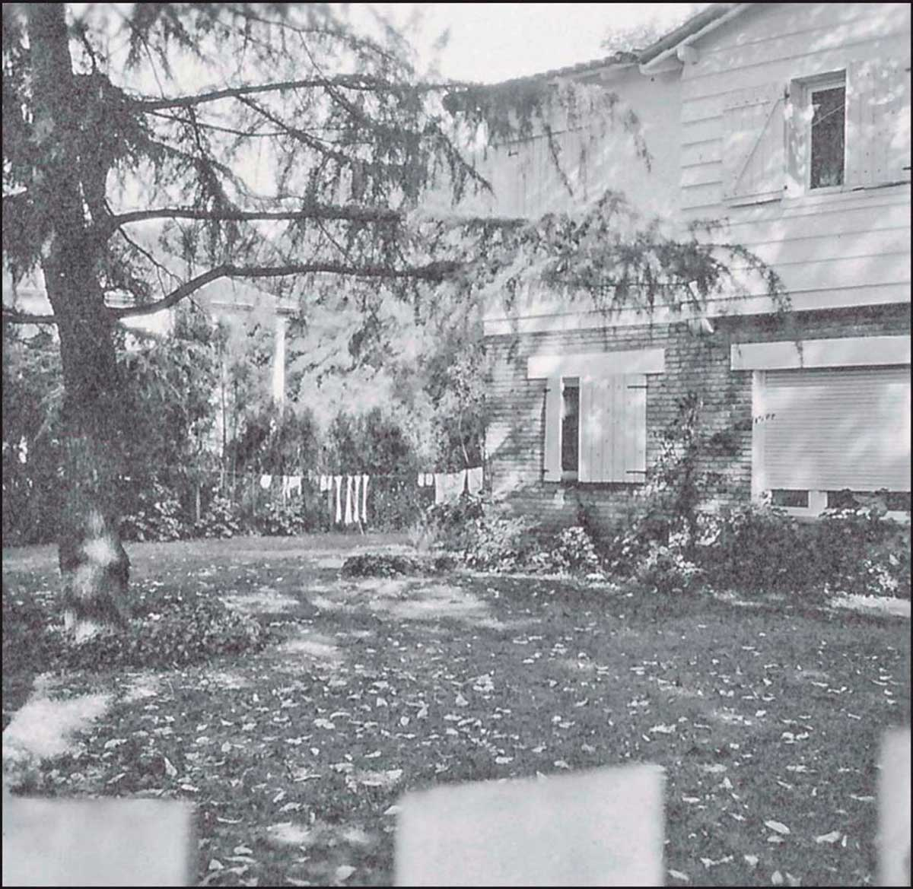

368 Casa de la familia Oesterheld en Beccar. Foto: gentileza familia Oesterheld. 1968, la editorial Jorge Álvarez decidió realizar una serie de biografías de figuras históricas de América Latina adaptadas a la historieta. Realizó una sobre el Che Guevara, con dibujos de Alberto Breccia y el debut profesional de Enrique Breccia, su hijo, y se planeaba una segunda sobre Eva Perón, pero, al salir a la venta, el gobierno militar la retiró y secuestró los originales. La biografía de Eva Perón en historieta no llegó a terminarse, aunque años más tarde la editorial Doedytores rescataría los originales y la publicaría. El resto del proyecto fue abortado. Nuevamente en colaboración con Alberto Breccia, en 1969 publicó una nueva versión de “El Eternauta” para la revista Gente, ya con un guion políticamente más comprometido. La publicación fue cancelada y buena parte de la historia original fue resumida para no dejarla inconclusa. También de la misma época son los microrrelatos agrupados bajo el título de “Sondas”, para la antología Los argentinos en la luna, de Ediciones de la Flor. Otras obras de renombre creadas a través de los años por Héctor Oesterheld son: Ernie Pike, basada en el corresponsal de la Segunda Guerra Mundial Ernie Pyle, ganador de un premio Pulitzer por ofrecer un enfoque personal de la guerra, no centrándose en la acción de las batallas o en la división de los combatientes en héroes y villanos, sino en contar las historias trágicas de soldados generalmente desconocidos
